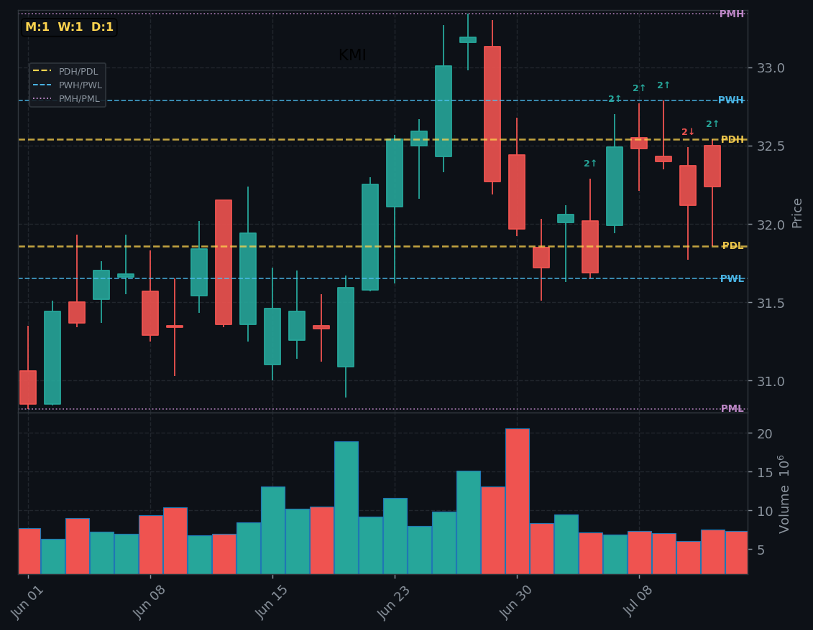

| WHEN | TICKER | STRAT | TIME | EXP MOVE | AH MOVE | EPS EST |
|---|---|---|---|---|---|---|
| AMC | HOMBBeat 4/4 · avg +0% | M:1W:2↑D:1 | AMC | — | — | 0.61 |
| Home Bancshares (HOMB) Reports Earnings Tomorrow: What To Expect. Regional banking company Home Bancshares (NYSE:HOMB) will be. | ||||||
| Overnight gap into Financial Services/Banks - Regional, analysts rate buy, $31 target (+7%). | ||||||
| AMC | KMIBeat 3/4 · avg +0% | M:1W:1D:1 | AMC | — | — | 0.31 |
| Energy Infrastructure Stock Targa Resources Teases A Breakout. Top-rated energy infrastructure stock Targa Resources flirte. | ||||||
| Overnight gap into Energy/Oil & Gas Midstream, analysts rate buy, $35 target (+9%). | ||||||
| AMC | UALBeat 4/4 · avg +0% | M:1W:2↓D:1 | AMC | — | — | 1.84 |
| Is United (UAL) Turning Extra-Space Economy Seats Into a Durable Premium-Brand A. United Airlines announced in the past that its new Airbus A3. | ||||||
| Overnight gap into Industrials/Airlines, analysts rate strong buy, $154 target (+28%). | ||||||

| IMPACT | EVENT | TIME (ET) | PREV | FORECAST |
|---|---|---|---|---|
| MED | Core PPI (MoM) (Jun) | 8:30am | 0.4% | 0.3% |
| Producer prices — leads CPI by 1-2 months. Inflation pipeline gauge. Prev 0.4% → est 0.3%. | ||||
| MED | NY Empire State Manufacturing Index (Jul) | 8:30am | 5.70 | 9.30 |
| Economic data release. Prev: 5.70, Forecast: 9.30. | ||||
| HIGH | PPI (MoM) (Jun) | 8:30am | 1.1% | 0.0% |
| Producer prices — leads CPI by 1-2 months. Inflation pipeline gauge. Prev 1.1% → est 0.0%. | ||||
| MED | FOMC Member Williams Speaks | 8:45am | — | — |
| Fed rate decision — maximum market uncertainty event. Watch statement wording. | ||||
| HIGH | Crude Oil Inventories | 10:30am | 2.998M | -1.800M |
| Oil inventory — impacts energy sector and inflation expectations. Prev 2.998M → est -1.800M. | ||||
| MED | Cushing Crude Oil Inventories | 10:30am | -0.052M | — |
| Oil inventory — impacts energy sector and inflation expectations. | ||||
| MED | Beige Book | 2:00pm | — | — |
| Economic data release. Prev: —, Forecast: —. | ||||
| DAY | IMPACT | EVENT | TIME (ET) | FORECAST | PREV |
|---|---|---|---|---|---|
| Mon 7/13 | 🟡 MED | FOMC Member Bowman Speaks | 5:25am | — | — |
| 🟡 MED | OPEC Meeting | 6:00am | — | — | |
| 🟡 MED | Fed Waller Speaks | 12:30pm | — | — | |
| 🟡 MED | Federal Budget Balance (Jun) | 2:00pm | -135.8B | -293.0B | |
| Tue 7/14 | 🟡 MED | ADP Employment Change Weekly | 8:15am | — | 21.00K |
| 🔴 HIGH | Core CPI (MoM) (Jun) | 8:30am | 0.2% | 0.2% | |
| 🟡 MED | Core CPI (YoY) (Jun) | 8:30am | 2.8% | 2.9% | |
| 🔴 HIGH | CPI (MoM) (Jun) | 8:30am | -0.1% | 0.5% | |
| 🔴 HIGH | CPI (YoY) (Jun) | 8:30am | 3.8% | 4.2% | |
| 🟡 MED | Fed Vice Chair for Supervision Barr Speaks | 12:40pm | — | — | |
| 🟡 MED | FOMC Member Bowman Speaks | 2:55pm | — | — | |
| 🟡 MED | TIC Net Long-Term Transactions (May) | 4:00pm | 128.5B | 104.8B | |
| 🟡 MED | API Weekly Crude Oil Stock | 4:30pm | -2.700M | -0.399M | |
| Wed 7/15 | 🟡 MED | Core PPI (MoM) (Jun) | 8:30am | 0.3% | 0.4% |
| 🟡 MED | NY Empire State Manufacturing Index (Jul) | 8:30am | 9.30 | 5.70 | |
| 🔴 HIGH | PPI (MoM) (Jun) | 8:30am | 0.0% | 1.1% | |
| 🟡 MED | FOMC Member Williams Speaks | 8:45am | — | — | |
| 🔴 HIGH | Crude Oil Inventories | 10:30am | -1.800M | 2.998M | |
| 🟡 MED | Cushing Crude Oil Inventories | 10:30am | — | -0.052M | |
| 🟡 MED | Beige Book | 2:00pm | — | — | |
| Thu 7/16 | 🟡 MED | Continuing Jobless Claims | 8:30am | — | 1,814K |
| 🔴 HIGH | Core Retail Sales (MoM) (Jun) | 8:30am | -0.1% | 0.8% | |
| 🔴 HIGH | Initial Jobless Claims | 8:30am | 215K | 215K | |
| 🔴 HIGH | Philadelphia Fed Manufacturing Index (Jul) | 8:30am | 12.1 | 10.3 | |
| 🟡 MED | Philly Fed Employment (Jul) | 8:30am | — | 7.9 | |
| 🟡 MED | Retail Control (MoM) (Jun) | 8:30am | — | 0.7% | |
| 🔴 HIGH | Retail Sales (MoM) (Jun) | 8:30am | 0.3% | 0.9% | |
| 🟡 MED | Business Inventories (MoM) (May) | 10:00am | 0.3% | 0.5% | |
| 🟡 MED | Pending Home Sales (MoM) (Jun) | 10:00am | -0.3% | 3.8% | |
| 🟡 MED | Retail Inventories Ex Auto (May) | 10:00am | 0.4% | 0.4% | |
| 🟡 MED | Atlanta Fed GDPNow (Q2) | 11:30am | 1.3% | 1.3% | |
| Fri 7/17 | 🟡 MED | Building Permits (Jun) | 8:30am | 1.400M | 1.410M |
| 🟡 MED | Export Price Index (MoM) (Jun) | 8:30am | — | 1.3% | |
| 🟡 MED | Housing Starts (MoM) (Jun) | 8:30am | — | -15.4% | |
| 🟡 MED | Housing Starts (Jun) | 8:30am | 1.320M | 1.177M | |
| 🟡 MED | Import Price Index (MoM) (Jun) | 8:30am | -0.4% | 1.9% | |
| 🟡 MED | Industrial Production (MoM) (Jun) | 9:15am | 0.2% | 0.1% | |
| 🟡 MED | Industrial Production (YoY) (Jun) | 9:15am | — | 1.67% | |
| 🟡 MED | Michigan 1-Year Inflation Expectations (Jul) | 10:00am | — | 4.6% | |
| 🟡 MED | Michigan 5-Year Inflation Expectations (Jul) | 10:00am | — | 3.3% | |
| 🟡 MED | Michigan Consumer Expectations (Jul) | 10:00am | — | 50.7 | |
| 🟡 MED | Michigan Consumer Sentiment (Jul) | 10:00am | 51.4 | 49.5 | |
| 🟡 MED | Atlanta Fed GDPNow (Q2) | 10:45am | — | — | |
| 🟡 MED | U.S. Baker Hughes Oil Rig Count | 1:00pm | — | — | |
| 🟡 MED | U.S. Baker Hughes Total Rig Count | 1:00pm | — | — | |
| 🟡 MED | CFTC Crude Oil speculative net positions | 3:30pm | — | 75.7K | |
| 🟡 MED | CFTC Gold speculative net positions | 3:30pm | — | 194.2K | |
| 🟡 MED | CFTC Nasdaq 100 speculative net positions | 3:30pm | — | 2.1K | |
| 🟡 MED | CFTC S&P 500 speculative net positions | 3:30pm | — | -42.9K |